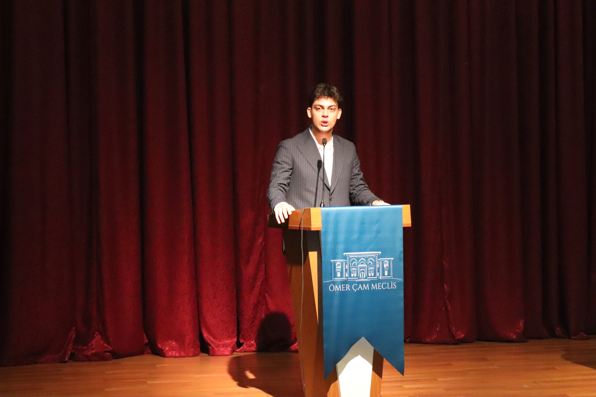

12 Eylül 2009 İstanbul Pendik doğumlu Yavuz Selim TERZİ aslen Trabzon Çaykaralıdır; küçük yaştan babası sayesinde siyasete ilgi duymaya başlayan Yavuz şuanda Maltepe Orhangazi Anadolu İmam Hatip Lisesinde 12. Sınıf öğrencisidir. Bir çok siyasi etkinliğe katılmış ve bu etkinliklerde görev almıştır; farklı okullardan tanıştığı arkadaşları ile GAZİ Meclis-i Mebusan projesinin Genel Koordinatör görevini üstlenmiştir.